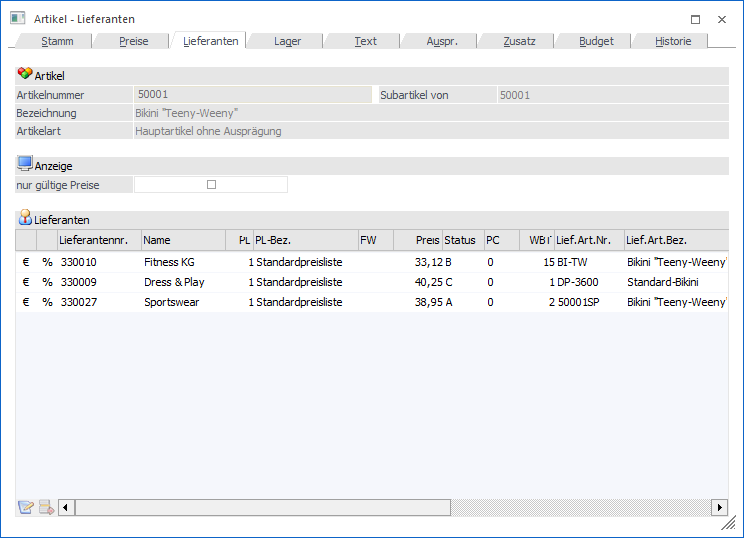
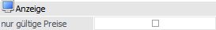
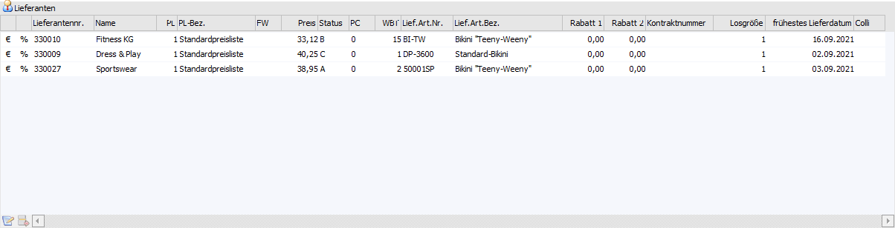
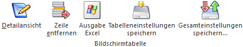

Im Register "Lieferanten" werden alle Lieferanten hinterlegt, bei welchen der Artikel bezogen werden kann (beliebig viele).
Achtung
Damit die automatische Lieferantenbestellung funktioniert, muss pro Artikel mindestens ein Lieferant hinterlegt werden.
Hinweis
Es macht selbstverständlich keinen Unterschied, ob die Preise im Register "Lieferanten", im Register "Preise" (Preisart "13 - Lieferantenspezifischen Preis") oder über den Lieferantenstamm (Personenkontenstamm - Register "FAKT" - Button "individuelle Preise") definiert werden.
Das Ergebnis ist jeweils ein neuer Preislisteneintrag, welcher im Belegbearbeiten und im Bestellwesen automatisch im Zusammenhang Artikel <-> Lieferant für die Preisfindung herangezogen wird.

Folgende Eingabefelder, Einstellungen und Informationen stehen zur Verfügung:
Artikel

Ø Artikelnummer
An dieser Stelle wird die Artikelnummer des ausgewählten Artikels angezeigt.
Ø Subartikel von
Handelt es sich bei dem aktuellen Artikel preistechnisch um einen Subartikel eines anderen Artikels, so wird hier die Artikelnummer des sogenannten Hauptartikels angezeigt und alle folgenden Felder sind für eine Eingabe gesperrt. Handelt es sich nicht um einen Subartikel, so wird an dieser Stelle die Artikelnummer des aktuellen Artikels dargestellt.
Ø Bezeichnung
Hier wird die Bezeichnung des aktuell gewählten Artikels dargestellt.
Ø Artikelart
An dieser Stelle wird die Art des Artikels ausgewiesen, d.h. ob es sich z.B. um einen Artikel mit oder ohne Ausprägungen handelt.
Ø Lagerführung
Handelt es sich bei dem Artikel um einen Artikel, welcher in 2 Mengen geführt wird, so wird neben der Artikelart die statische Information "Lagerführung in 2 Mengen" angezeigt.
Anzeige

Ø nur gültige Preise
Durch Aktivieren dieser Option wird gesteuert, dass nur jene Preise dargestellt werden die zum Tagesdatum gültig sind.
Hinweis
Bei Änderung dieser Einstellung wird die Option "nur gültige Preise" im Unterregister "Preise" ebenfalls angepasst.
Tabelle "Lieferanten"

In der Lieferantentabelle werden alle Preiseinträge des Artikels der Lieferanten angezeigt bzw. können eingepflegt werden. Der Preis selber setzt sich dabei aus vielen unterschiedlichen Punkten zusammen, was in den einzelnen Spalten entsprechend aufbereitet wird.
Hinweis
Neben den Standardspalten stehen über die rechte Maustaste (Funktion "Spalten anzeigen / verstecken") weitere Spalten zur Verfügung.
Folgende Informationen können im Standard hinterlegt werden (weitere Informationen zu den einzelnen Spalten entnehmen Sie bitte dem Kapitel Artikel - Register "Detailansicht"):
Ø Lieferantennr.
An dieser Stelle wird die Nummer des Lieferanten hinterlegt.
Ø Name
Hier wird der Name des ausgewählten Lieferanten angezeigt.
Ø PL
In dieser Spalte erfolgt die Zuweisung zur Preisliste, welche das Bindeglied zwischen Lieferanten und Artikel darstellt.
Ø PL-Bez.
Hier wird der Name der ausgewählten Preisliste angezeigt.
Ø FW
Hier wird die Fremdwährung der ausgewählten Preisliste angezeigt.
Ø Preis
In diesem Feld wird der Einkaufspreis hinterlegt.
Ø Status
Pro Lieferant kann ein Status (A, B, C) vergeben werden, welches die Priorität des Lieferanten kennzeichnet. Der Hauptlieferant bekommt automatisch das Kennzeichen "A". Beim automatischen Bestellvorschlag kann nach diesem Kennzeichen selektiert werden.
Hinweis
Werden mehrere Lieferanten mit dem Kennzeichen "A" hinterlegt, so wird beim Einkauf, wenn die Selektion "Hauptlieferant" ausgewählt wird, der erste Lieferant mit diesem Kennzeichen herangezogen.
Hinweis 2
Je nachdem welche Option in den FAKT-Parametern im Bereich Einkauf "Lieferantenstatus bei Eingabe im Artikelstamm" gewählt wurde, kann der Status von lieferantenspezifischen Preisen beim Speichern geprüft werden und es wird ggf. eine entsprechende Hinweismeldung ausgegeben und der Datensatz kann nicht gespeichert werden. Weitere Hinweise zu diesem Thema befinden sich im Bereich der FAKT-Parameter.
Ø PC
An dieser Stell kann ein Provisionscode hinterlegt werden, welcher die Hinterlegung aus dem Artikelstamm (Register "Preise" - Unterregister "Preise" - Feld "Provisionscode") übersteuert.
Ø WBT
Die Abkürzung "WBT" steht für "Wiederbeschaffungstage" und definiert die Zeit (in Tagen), die es dauert, bis die Waren im Normalfall eintrifft (ab Bestellung.)
Ø Lief. Art. Nummer / Lief. Art. Bezeichnung
Hier wird die Artikelnummer und -bezeichnung des Lieferanten eingetragen.
Ø Rabatt 1 / Rabatt 2
In diese Spalten können die Rabattsätze des Lieferanten hinterlegt werden. Dabei wird vom Einzelpreis zunächst der Rabatt 1 und anschließend der Rabatt 2 gerechnet.
Hinweis
Ein Rabatt muss im Minus erfasst werden, ein Zuschlag hingegen positiv.
Ø Kontraktnummer
Handelt es sich bei der Preislistenzeile um einen Lieferantenkontrakt, so wird die Nummer des Kontrakts angezeigt.
Ø Losgröße
An dieser Stelle erfolgt die Hinterlegung einer Losgröße, d.h. die Menge die eingekauft wird, muss gleich bzw. ein Vielfaches dieses Wertes sein.
Ø frühestes Lieferdatum
Aufgrund der Wiederbeschaffungstage (WBT), welche in der Zeile hinterlegt wurden, wird das früheste Lieferdatum berechnet und angezeigt.
Ø Colli
An dieser Stelle kann der Colli, d.h. die Verpackungseinheit / Maßeinheit, angegeben werden, in welcher bei dem Lieferanten eingekauft wird. Durch eine Eingabe an dieser Stelle wird der Basis-Colli (Register "Preise" - Unterregister "Preise") für die Belegerfassung und den automatischen Einkauf übersteuert.
Tabellenbuttons

Ø Detailansicht
Es wird das Register "Detailansicht" aufgerufen, in welchem die Daten des aktuellen Preises editiert werden können.
Hinweis
Dieses ist auch bei neuen Preiseinträgen möglich.
Ø Zeile entfernen
Durch Anwahl des Buttons wird die markierte Preiszeile gelöscht.
Ø Ausgabe Excel
Durch Anwahl des Buttons "Ausgabe Excel" wird der Inhalt der Tabelle an Microsoft Excel übergeben.
Ø Tabelleneinstellungen speichern
Die Spalten einer Tabelle können grundsätzlich an beliebige Positionen verschoben, bzw. in der Breite entsprechend angepasst werden. Durch Anwahl des Buttons "Tabelleneinstellungen speichern" werden die Einstellungen benutzerspezifisch gespeichert und bei dem nächsten Aufruf des Programmpunktes wieder vorgeschlagen.
Ø Gesamteinstellungen speichern
Im Gegensatz zu "Tabelleneinstellungen speichern" können mit "Gesamteinstellungen speichern" mehrere Tabellenaufbauten gespeichert und nach Wunsch geladen werden. Zusätzlich werden Sonderfunktionen der Tabelle (z.B. "Spalte gruppieren") ebenfalls bei der Speicherung bedacht.